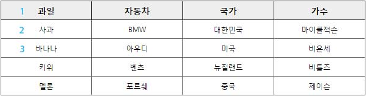
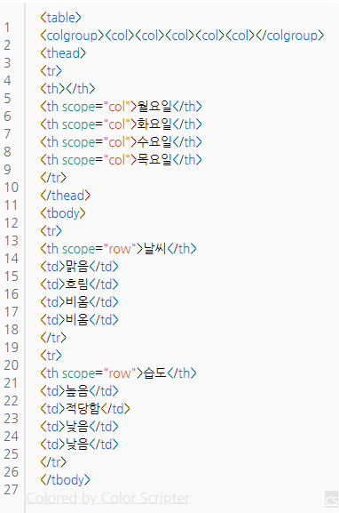

HTML Refernce
HTML
HTML( HyperText Markup Language )은 웹 페이지를 만들기 위한 언어입니다.
- HT = HyperText : 문서와 문서를 연결
- M = Markup : 마크업, 태그
- L = Language : 언어
- HTML이란? 문서와 문서로 연결된 태그 언어를 말합니다.
태그(Tag)
태그는 정보를 정의하는 방식을 의미합니다.
- 태그는 열린태그와 닫는태그가 있습니다.
- 닫는태그에는 "/" 있어야 합니다.
- 닫는태그가 필요 없는 것도 있습니다. (일반 적인 태그는 태그 처럼 시작하면 태그 처럼 닫아주어야 합니다. 하지만 br 등의 일부 태그는 /br 처럼 닫지 않는 경우가 있는데, 이를 닫는 태그가 없는 태그라 합니다. <br>,<img>,<meta>,<link>,<input>,<hr> 등의 태그는 닫는 태그가 없는데, 그 이유는 태그 내부에 넣을 값이 없기 때문입니다.)
- HTML5에서는 "/"가 생략이 가능합니다.
블록 요소/인라인 요소(Block/Inline)
블록 요소는 박스, 인라인 요소는 텍스트를 의미합니다.
- 블록 엘리먼트(Block Element)
- 독립된 박스 영영으로, 한 줄에 하나에 블록요소만 표현 할 수 있습니다.
- 블록요소에는 블록요소 인라인요소를 포함 할 수 있습니다.
- <div>,<p>,<h1>~<h6>,<ul>,<li>
- 인라인 엘리먼트(Inline Element)
- 독립된 텍스트 영역으로 , 한 줄에 여러개의 인라인요소를 표현 할 수 있습니다.
- 인라인요소에는 블록요소가 포함 될 수 없지만, 인라인요소는 포함 할 수 있습니다.
- <span>,<a>,<strong>,<em>,<img>

DTD (Document type Declaration) 선언
- 독타입을 설정하지 않거나 잘못 설정하면 브라우저에 따라 화면이 다르게 나오거나 렌더링이 달라지기 떄문에 독타입을 설정해야 합니다
<!-- HTML5 --> <!DOCTYPE HTML> <!-- HTML 4.01 Strict --> <!DOCTYPE HTML PUBLIC "-//W3C//DTD HTML 4.01//EN" "http://www.w3.org/TR/html4/strict.dtd"> <!-- HTML 4.01 Transitional --> <!DOCTYPE HTML PUBLIC "-//W3C//DTD HTML 4.01 Transitional//EN" "http://www.w3.org/TR/html4/loose.dtd"> <!-- HTML 4.01 Frameset --> <!DOCTYPE HTML PUBLIC "-//W3C//DTD HTML 4.01 Frameset//EN" "http://www.w3.org/TR/html4/frameset.dtd"> <!-- XHTML 1.0 Strict --> <!DOCTYPE html PUBLIC "-//W3C//DTD XHTML 1.0 Strict//EN" "http://www.w3.org/TR/xhtml1/DTD/xhtml1-strict.dtd"> <!-- XHTML 1.0 Transitional --> <!DOCTYPE html PUBLIC "-//W3C//DTD XHTML 1.0 Transitional//EN" "http://www.w3.org/TR/xhtml1/DTD/xhtml1-transitional.dtd"> <!-- XHTML 1.0 Frameset --> <!DOCTYPE html PUBLIC "-//W3C//DTD XHTML 1.0 Frameset//EN" "http://www.w3.org/TR/xhtml1/DTD/xhtml1-frameset.dtd">
언어 속성 설정
<!-- HTML5 --> <html lang="ko"> <!-- HTML4 --> <html lang="ko" xml:lang="ko" xmlns= "http://www.w3.org/1999/xhtml">
문서 정보 설정
<!--html5 언어설정--> <meta charset="UTF-8"> <!--html4 언어설정--> <meta http-equiv="Content-Language" content="text/html; charset=UTF-8"> <!--웹 문서에 대한 제작자 설정--> <meta name="author" content="kimkyoungmin"> <!--웹 문서에 대한 설명 설정--> <meta name="description" content="사이트 설명"> <!--웹 문서에 대한 키워드 설정--> <meta name="keywords" content="키워드">
HTML Description
<html>
HTML 문서의 최상위 루트를 나타냅니다.
<head>
HTML 문서의 헤더 요소를 정의하는 영역입니다 .
<body>
HTML 문서의 본문에 헤당하는 콘텐츠를 정의하는 영역입니다.
<meta>
문서에 대한 정보를 제공합니다.
<link>
문서를 외부 파일과 연결합니다.
<title>
문서의 제목을 설정합니다.
<h1>~<h6>
섹션, 문단의 제목을 나타내며 숫자가 작을수록 글자의 크기가 커집니다.
<p>
paragraph의 약자로, 하나의 문단을 만들 때 쓰입니다.
<ul>
unordered list의 약자로, 순서가 필요없는 목록을 만듭니다.
<li>
list의 약자로, 목록을 만드는 태그이며, 단독으로 쓰이지 않습니다.
<a>
하이퍼링크를 걸어주는 태그입니다.
- href: 링크로 이동하는 경로를 설정합니다.
- target: 새로운 브라우저를 설정합니다.
- _self: 현재 페이지 (기본값)
- <a target="_blank"></a>: 링크 클릭시 새로운 브라우저 창으로 설정합니다.
- <a target="_parent"></a>: 현재 부라우저의 부모 브라우저 창으로 설정합니다. 부모가 없는 경우 _self와 동일합니다.
- <a target="_top"></a>: 최상위 브라우저 창에서 설정합니다.
- <a target="_self"></a>: 현재와 동일한 브라우저 창으로 설정합니다.
- 방문하지 않은 링크는 밑줄과 파란색으로 표시됩니다.
- 방문한 링크는 밑줄과 보라색으로 표시됩니다.
- 활성화된 링크는 밑줄과 빨간색으로 표시됩니다.
- <a> 태그는 예외적으로 HTML5에서 블록요소를 포함 할 수 있습니다.
<strong>
글자를 굵게 표시하여, 텍스트를 중요하게 보이고자 할때 사용합니다.
<em>
텍스트를 강조하고자 할때 사용 합니다.
<span>
<div></div> 태그처럼 특별한 기능을 갖고있지 않고, CSS와 함께 쓰입니다.
<div>
문단 서식에 관한 태그입니다. 스타일을 이용해서 크기를 잡지 않는다면 기본적으로 줄바꿈이 됩니다.
<address>
문서 나 문서의 작성자 / 소유자의 연락처 정보를 정의합니다.
- body : 문서에 대한 연락처 정보를 나타냅니다.
- article : 그 기사의 연락처 정보를 나타냅니다.
<hr>
주제를 분리하기 위한 용도로 사용합니다.(닫는태그는 없음)
<br>
줄바꿈 할때 사용합니다.
<table>
데이터를 담고 있는 표를 만들기 위한 목적
- colspan : 셀(가로줄)을 합치는 개수를 지정
- rowspan : 셀(세로줄)을 합치는 개수를 지정
- border : 테이블 경계선 굵기를 지정
- bgcolor : 배경색으로 지정
- bordercolor : 경계선 색깔 지정
- width : 너비를 지정(픽셀이나 %)
- height : 높이를 지정(픽셀이나 %)
- cellpadding : 셀과 경계선 사이의 여백
- cellspacing : 셀과 셀 사이의 여백
- align : 셀의 가로줄을 오른쪽,왼쪽,중앙 등으로 정렬
- valign : 셀의 세로줄의 위 중앙 아래를 정렬
<input>
사용자가 다양하게 폼 태그에 입력할 수 있는 공간을 만들어 줍니다.
- type : 태그 모양을 다양하게 변경할 수 있습니다. type에는 text, radio, checkbox, password, button, hidden, fileupload, submit, reset 등을 지정할 수 있습니다.
- name : 태그 이름을 지정합니다.
- maxlength : 해당 태그 최대 글자 수를 지정합니다.
- required : 해당 태그가 필수태그로 지정됩니다. 필수 태그를 입력하지 않고, submit 버튼을 누르면 에러메시지가 웹 브라우저에 출력됩니다. (HTML5 추가사항)
- autofocus : 웹 페이지가 로딩되자마자 이 속성을 지정한 태그로 포커스가 이동됩니다. (HTML5 추가사항)
- placeholder : 태그에 입력할 값에 대한 힌트를 줍니다. (HTML5 추가사항)
- pattern : 정규표현식을 사용하여 특정범위 내의 유효한 값을 입력받을 때 사용합니다. (HTML5 추가사항)
<legend>
fieldset 요소의 제목(LEGEND)을 표시한다. fieldset 요소를 이용하여 여러 개의 컨트롤들을 묶었으면 이 묶음이 어떤 성격 또는 용도인지 알려줄 필요가 있다.
<fieldset>
관련 있는 폼 필드 세트(form FIELD SET)를 표시한다. 폼 필드 세트는 폼 내에서 관련 컨트롤을 하나의 그룹으로 묶은 것을 말한다.
<form>
폼(FORM)의 범위를 표시한다. 폼은 사용자 입력을 위한 다양한 형식의 컨트롤(W3C는 입력필드, 버튼 등 폼을 구성하는 입력 요소를 컨트롤이라고 부름)로 구성되는 영역이며, 이 영역의 시작과 종료 지점은 form 요소에 의해 정의된다
- action : 폼을 전송할 서버 쪽 스크립트 파일을 지정합니다.
- name : 폼을 식별하기 위한 이름을 지정합니다.
- accept-charset : 폼 전송에 사용할 문자 인코딩을 지정합니다.
- target : action에서 지정한 스크립트 파일을 현재 창이 아닌 다른 위치에 열도록 지정합니다.
- method : 폼을 서버에 전송할 http 메소드를 정합니다. (GET 또는 POST)
section
- 콘텐츠와 관련된 한 가지 주제 영역을 말합니다.
- section 요소는 문장이나 문서의 스타일링 요소가 아니기 때문에 편의나 영역을 위함이면 div 태그가 좋습니다.
- section 요소는 재목이 없는 경우는 섹션이라고 할 수 없기 때문에 제목을 제공해야 합니다.
- section 요소는 일반적인 주제가 아니라면 구체적인 요소(article, aside, nav)를 사용하는 것이 더 적절합니다.
article
- article는 포럼,신문기사,잡지,블러그 항목, 게시판 글 등은 콘텐츠의 독립적인 항목을 나타냅니다.
- section은 하나의 주제를 나타낸다면, article은 주제를 묶은 독립적인 콘텐츠입니다.
- section 요소 안에는 article 요소를 쓸 수 있으며, article 요소안에도 section요소를 쓸 수 있습니다.
nav
- nav는 문서의 핵심적인 페이지의 메뉴 및 서브메뉴에서 사용하고, 문서에서 주로 한 번만 사용 합니다.
- 문서 안에 링크가 포함된 콘텐츠는 nav를 사용하지 않습니다.
- nav는 핵심적인 네비게이션에 사용해야 하므로, 푸터 내에 링크 그룹의 사용은 적절하지 않습니다.
main
- main은 웹 페이지에서 한 번만 사용할 수 있으며, 접근성과 검색 영역에 노출을 향상시킵니다.
- article, aside, footer, header, nav를 하위 요소로 사용 할 수 있습니다.
aside
- aside는 메인 콘텐츠와 관련된 사이드의 정보, 광고 등 부분적인 정보를 그룹화 할 때 사용합니다.
header
- 헤더에는 웹페이지에 대한 소개, 네비게이션 영역, 테이블 영역, 검색영역, 로고영역을 포함한 영역입니다.
- 헤더에는 제목 태그가 포함 될 수 있으며, 필수 조건은 아닙니다.
- header는 섹션 콘텐츠가 아닌 그룹화하기 위한 요소이므로 section 요소를 포함 할 수 없습니다.
footer
- footer는 저작권 정보, 회사정보, 관련링크, 주소, 바닥글, 사이트정보 등을 포함하는 콘텐츠 영역입니다.
- footer는 섹션 콘텐츠가 아닌 그룹을 나타내는 요소이며, section, article, aside, 등을 포함 할 수 있습니다.
html5에서 새로 생긴 태그
- article : 문서의 기사를 정의
- aside : 페이지 내용을 제외하고 내용을 정의
- bdi : 다른 텍스트와는 다른 방향으로 포맷 할 수있는 텍스트의 일부를 정의
- details : 사용자가 보거나 숨길 수있는 추가 정보를 정의합니다
- dialog : 대화 상자 또는 창을 정의
- figcaption : A에 대한 자막을 정의 figure 요소
- figure : 등 그림, 도표, 사진, 코드 목록, 같은 자체에 포함 된 내용을 정의합니다
- footer : 문서 또는 섹션 바닥 글을 정의
- header : 문서 또는 섹션 헤더를 정의합니다
- main : 문서의 주요 내용을 정의
- mark : 표시 또는 텍스트를 강조 정의합니다
- menuitem : 사용자가 팝업 메뉴에서 호출 할 수있는 명령 / 메뉴 항목을 정의합니다
- meter : 공지 범위 스칼라 측정을 정의
- nav : 문서의 탐색 링크를 정의
- progress : 작업의 진행 상황을 정의
- rp : 지원하지 않는 브라우저에 표시 할 것을 정의 ruby 주석을
- rt : 문자에 대한 설명 / 발음을 정의합니다
- ruby : 정의 ruby 주석을 (for East Asian typography)
- section : 문서에 섹션을 정의합니다
- summary : A에 대한 눈에 띄는 제목을 정의 요소
- time : 날짜 / 시간을 정의
- datalist : 입력 제어를위한 미리 정의 된 옵션을 정의
- keygen : 키 쌍 생성기 필드를 정의 (for forms)
- output : 계산 결과를 정의
html5에서 의미가 변한 속성 태그
- HTML5의 DTD 선언:!DOCTYPE html
- HTML5의 인코딩 선언:meta charset="utf-8"
- hr - 원래 단순한 가로줄을 나타내는 태그 였으나, 페이지의 주제가 바뀔 때 내용을 분리시키는 의미가 HTML5에서 추가되었다.
- u - 양식상 일반적인 텍스트보다 돋보여야 할 때 쓴다. 예를 들어 철자가 틀린 단어나, 중국어로 번역된 고유 명사등이 있다. 별도의 CSS없이 쓰면 브라우저에서는 밑줄을 긋는 것이 기본값이다.
- s - 더이상 옳지 않은 내용을 나타내는 데에 쓴다. 별도의 CSS없이 쓰면 브라우저에서는 취소선을 긋는 것이 기본값이다. 더 적절한 시맨틱 태그가 있을 경우 그쪽을 쓴다.
- strong- HTML4에서는 강한 강조를 의미했지만, HTML5에서는 중요성으로 의미가 변경되었다.
html5에서 없어진 태그
- basefont
- big
- center
- font
- s
- strike
- tt
- u
- frame
- framesets
- noframes
- acronym
- applet
- isindex
- dir
table 속성
- thead, tbody, tfoot
- 여러개의 행을 하나의 그룹으로 묶어주는 엘리먼트 입니다. 테이블 안에서 이 3개의 태그는 사용이 제한이 있는데 thead와 tfoot는 한 테이블에서 하나만 작성을 할 수가 있습니다. 하지만 tbody의 경우는 여러번 사용해도 무방합니다.
header 의th 태그를 적용하면 글자가 bold체로 굵게 표시되고 가운데 정렬을 하게 됩니다. - summary
- 표의 목적이나, 음성, 점자등 보이지 않는 메디아 표현의 구조를 제공합니다. 해당 테이블의 내용이 뭔지를 축약적으로 나타낼 수 있습니다. 이미지 태그의 alt 속성과 같다고 할 수 있습니다.
- caption (닫는 태그 필요)
- 테이블의 열이나 행 앞에 header나 caption을 넣어 줄때 사용합니다. caption태그는 반드시 table태그 블록에 포함 되어야 합니다. default 정렬방식은 중앙정렬 입니다.
- 속성
- ① align = top, left, right, bottom
- top : 행의 상단에 배치
- left : 문자열을 왼쪽에 정렬
- right : 문자열을 오른쪽에 정렬
- bottom : 행의 하단에 배치
- ② class : css의 class 선택자를 지정합니다.
- ③ id : css의 id 선택자를 지정합니다.
- ④ style : css스타일을 지정합니다.
- 속성
- colgroup (닫는 태그 선택적)
- 표의 세로줄 그룹을 만들때 사용합니다. table요소내에서 caption뒤 thead 앞에 위치 해야 합니다.
- 속성
- ① class : css의 class 선택자를 지정 합니다.
- ② id : css의 id 선택자를 지정합니다.
- ③ style : css 스타일을 지정합니다.(적용할 수 있는 스타일은 border, background, width 입니다.)
- ④ span : 그룹화할 세로줄의 개수를 지정합니다.
- ⑤ width : 세로줄 그룹의 너비를 지정합니다.
- ⑥ align = top, left, right, bottom, center (ie에서만 적용됩니다. 구글이나 파이어폭스에서 적용안됨)
- 속성
- col (닫는 태그 없음)
- 표의 세로줄을 지정할때 사용합니다. table요소내에서 caption뒤 thead 앞에 위치 해야 합니다. colgroup과 달리 col은 세로줄을 구조적으로 그룹핑하지 않으며 단순히 하나 이상 세로줄에 공통적인 속성을 정의 합니다. col요소는 table요소 안에 바로 포함되거나 colgroup 안에 포함될 수 있습니다. col요소가 colgroup안에 있을때 col속성은 colgroup속성보다 우선합니다.
- 속성
- ① class : css의 class 선택자를 지정 합니다.
- ② id : css의 id 선택자를 지정합니다.
- ③ style : css 스타일을 지정합니다. (적용할 수 있는 스타일은 border, background, width 입니다.)
- ④ width : 디폴트 값은 픽셀입니다. %로도 사용이 가능합니다.
- ⑤ span : 그룹화할 가로줄의 개수를 지정합니다.
- 속성
- scope
- 데이터의 header 정보를 제공합니다
- col : 그 열의 header의 정보를 제공합니다.
- row : 그 행의 header의 정보를 제공합니다.
- abbr (헤더의 요약)
- 스크린리더가 테이블의 내용을 읽어 내려갈때 테이블의 내용(td) 보다는 상단header(th)부분부터 읽게 될 것입니다. 만약 이때 헤더(th) 내용이 길게 들어가면 스크린리더가 행을 읽을때마다 헤더의 내용을 계속 반복해서 읽게 될 것입니다. abbr속성은 이렇게 길게 들어가 있는 헤더의 내용을 단축해서 표현해주는 역활을 합니다.
Table의 scope (col / row)
- scope는 th에 사용하는 속성으로, 제목과 내용을 연결해주는 기능을 갖고 있습니다.
- 예① : 과일에(th) scope="col" 이라고 적용하고 과일이라는 제목셀부터 사과, 바나나 순으로 읽으라는 뜻입니다. 
- 예② : 월요일(th)에 scope="col"을 적용하고 날씨(th)에 scope="row"라고 적용하면 월요일 - 날씨 - 맑음 순으로 읽으라는 뜻입니다.


